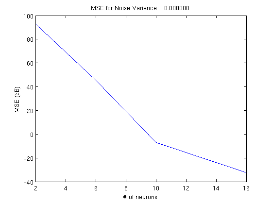
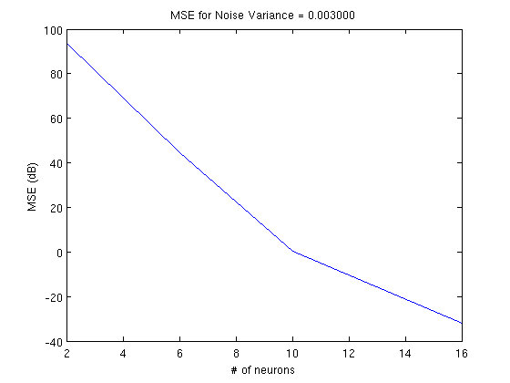
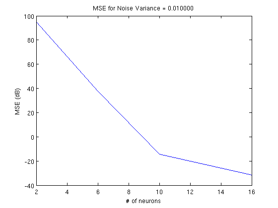
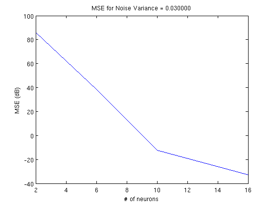
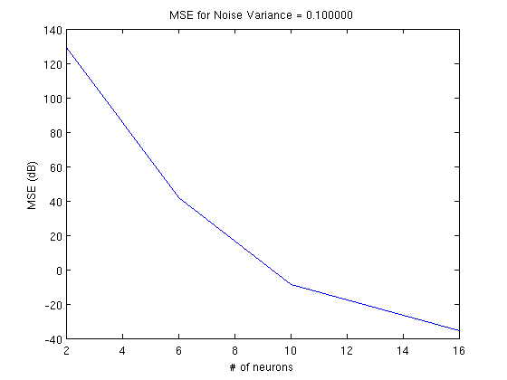

Effects of Noise on the Recovery of a Gammatone-Filtered Signal
Generate a trigonometric polynomial input signal:
M = 200; Omega = 2*pi*1200; T = 2*pi*M/Omega; dur = T; dt = 1e-7; t = [0:dt:dur-dt]; rand('twister',0); randn('state',0); u_orig = gen_trig_poly(T,dt,M); u_noiseless = u_orig/max(abs(u_orig));
Generate a Gammatone filter bank:
N = 16;
h = make_gammatone_fb(t,N); % size(h) == [N, length(t)]
Test effects of noise:
noise_var = [0, 0.001, 0.003, 0.01, 0.03, 0.1]; n_neurons = [2, 6, 10, 16]; mse = zeros(length(noise_var),length(n_neurons)); dt_temp = dt*100; t_temp = [0:dt_temp:dur-dt_temp]; for i=1:length(noise_var), % Add noise with the specified variance to the input signal: u = u_noiseless+sqrt(noise_var(i))*randn(1,length(u_noiseless)); % Filter the input signal: v = zeros(size(h)); for n=1:N, v(n,:) = filter_trig_poly(u,h(n,:)); end % Encode the filtered signal: b = 2+0.1*rand(1,N); d = 0.001*ones(1,N); s = {}; for n=1:N, s{end+1} = iaf_encode(v(n,:),dt,b(n),d(n)); end % Decode the filtered signal with different numbers of neurons for j=1:length(n_neurons), n = n_neurons(j); u_rec_temp = iaf_decode_filt_trig_pop(s(1:n),dur,dt_temp,Omega,M,b(1:n),d(1:n),h); u_rec = interp1(t_temp,u_rec_temp,t,'spline'); mse(i,j) = mean(abs(u_noiseless-u_rec).^2); end end
Plot the MSE as a function of the number of neurons:
for i=1:length(noise_var), figure(); plot(n_neurons,20*log10(mse(i,:))); title(sprintf('MSE for Noise Variance = %f',noise_var(i))); xlabel('# of neurons'); ylabel('MSE (dB)'); end    
Author: Lev Givon
Copyright 2009-2015 Lev Givon